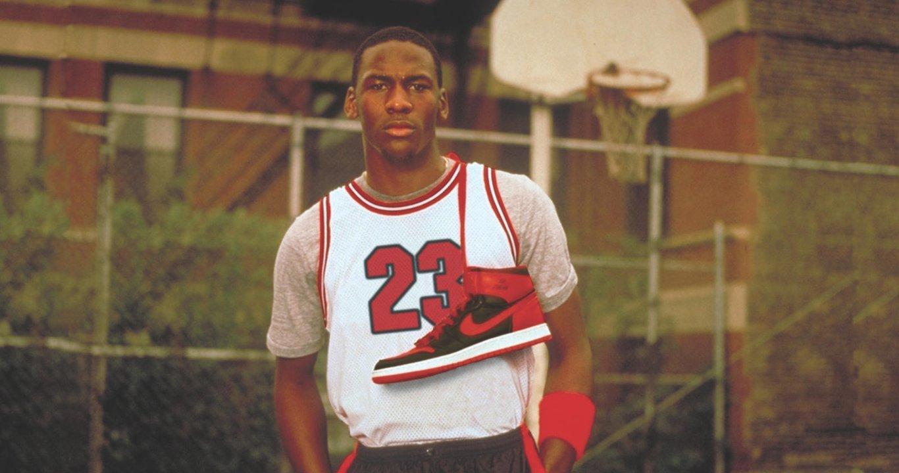

Historia
Si hablamos de leyendas del baloncesto, es imposible que no se nos venga a la cabeza el nombre de Michael Jordan. Y lo mismo ocurre cuando hablamos de sneakers. Si tenemos que pensar en zapatillas legendarias, seguro que las Air Jordan 1 son de las primeras que mencionamos. No podía ser de otra manera, puesto que Nike se inspiró en el popular jugador de la NBA e incluso tomó su nombre para crear estas deportivas de basket tan míticas.
Fue a mediados de los años 80 cuando Nike creó la marca Jordan y, gracias a su buena acogida, siguieron lanzando un nuevo modelo cada temporada con la idea de ir renovando el calzado deportivo de Michael Jordan. Las primeras Air Jordan 1 se crearon a medida para el jugador, pero tiempo después ya se empezaron a fabricar tallas estándar para cualquier persona.

Aunque existen más de 30 modelos en la colección, lo cierto es que las primeras siguen siendo las más queridas por el público. Por eso, en esta ocasión queremos centrarnos solo en ellas y contarte la historia de las Air Jordan 1, además de algunas curiosidades.
Un inicio complicado para las primeras zapatillas de Michael Jordan con Nike
Aunque a día de hoy sigue sorprendiendo esta anécdota, la verdad es que al principio Michael Jordan no quería firmar con Nike. Él era más de adidas. O de Converse, pues eran las únicas zapatillas que se ponía en su época de estudiante. Al jugador de los Chicago Bulls no le convencían demasiado las zapatillas de Nike, a las que incluso criticó diciendo que parecían «zapatillas del diablo». Tampoco le gustaba el grosor de la entresuela, demasiado alto para él, que prefería notar con más precisión el suelo de la cancha.
Sin embargo, este comentario fue muy importante ya que llegó a oídos de Nike. Fue entonces cuando el diseñador Peter Moore decidió reducir el tamaño de la mediasuela y marcar un nuevo camino en el calzado de la marca.

Como podrás imaginar, al final consiguieron convencerle para crear una línea de zapatillas propia. Las Nike Air Jordan 1 se pusieron a la venta de forma oficial en 1985 y serían las primeras de muchas. Llegaron con un diseño high top muy propio del calzado de baloncesto, es decir, con una caña alta que cubriera el tobillo. También destacaba el logo Swoosh de Nike en el lateral y el primero de los logos de Air Jordan compuesto por un balón de baloncesto con alas.
No sería hasta 1987 cuando Nike presentó el famoso logo Jumpman, que consistía en la propia silueta de Michael Jordan saltando por los aires a punto de marcar un mate. Es por eso que la línea Retro de las Air Jordan 1 no están decoradas con este logo, ya que apareció años después.
El modelo OG de las Jordan 1 combinaba negro y rojo de una forma muy intensa y llamativa. De hecho, a la NBA no le hicieron mucha gracia y no dudó en criticarlas por no cumplir con la normativa. Por aquel entonces lo habitual era que las zapatillas de los jugadores tuviesen una base blanca y algunos detalles basados en los colores de su equipo. Sin embargo, esta polémica solo consiguió que se hablara mucho de esta zapatilla y que, por lo tanto, se hiciera más popular todavía.
En Nike aprovecharon todo este revuelvo para crear la campaña Banned!, que fue todo un éxito. No hay mal que por bien no venga.
Hasta la NBA y más allá
Michael Jordan siguió llevando sus Jordan 1 durante su segunda temporada de la NBA, la del 85/86. Las malas noticias llegaron cuando la estrella de los Bulls se lesionó gravemente el pie durante un partido contra los Golden State Warriors. Estuvo muchos partidos sin jugar para poder garantizar su recuperación y, cuando volvió, lo hizo con una edición especial de las Air Jordan 1 que Nike le había preparado para que estuviera más cómodo tras su incidente.
Los Chicago Bulls consiguieron remontar la temporada y clasificarse para los playoffs. Su rival eran los Boston Celtics, a los que no consiguieron ganar. No obstante, Michael Jordan logró una cifra de récord siendo el máximo anotador de los playoffs con 63 puntos. Fue entonces cuando Larry Bird pronunció la famosa frase de «Dios se ha disfrazado de Michael Jordan».

Aunque después llegaran otras siluetas nuevas bastante populares dentro de la colección Air Jordan para sustituir a las primeras, lo cierto es que las AJ1 siempre han estado presentes. Aunque no fuera dentro de la cancha, pero sí en las calles de todo el mundo.
Los colores más emblemáticos de Air Jordan 1
Hay infinidad de versiones y de colorways de las Jordan 1 y siguen saliendo más y más cada mes, porque su éxito nunca se detiene. Aquí llega un repaso de algunos de los colores más destacados, aunque hay muchos más.
Bred: Es el color OG, con una combinación de negro y rojo.
Chicago: Es principalmente blanco y rojo, pero también tiene detalles en negro.
Royal: Es como la versión Bred, pero sustituyendo el rojo por el azul.
Shattered Backboard: Existen varios modelos, pero en casi todos ellos se junta naranja, negro y blanco.
UNC: Sus colores son blanco y azul claro.
Leer más...